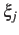
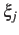

ABF requirements on collective variables
- Only linear combinations of colvar components can be used in ABF calculations.
- Availability of system forces is necessary. The following colvar components
can be used in ABF calculations:
distance, distance_xy, distance_z, angle,
dihedral, gyration, rmsd and eigenvector.
Atom groups may not be replaced by dummy atoms, unless they are excluded
from the force measurement by specifying oneSiteSystemForce, if available.
- Mutual orthogonality of colvars. In a multidimensional ABF calculation,
equation (17) must be satisfied for any two colvars
 and .
Various cases fulfill this orthogonality condition:
and .
Various cases fulfill this orthogonality condition:
- and are based on non-overlapping sets of atoms.
- atoms involved in the force measurement on do not participate in
the definition of . This can be obtained using the option oneSiteSystemForce
of the distance, angle, and dihedral components
(example: Ramachandran angles , ).
- and are orthogonal by construction. Useful cases are the sum and
difference of two components, or distance_z and distance_xy using the same axis.
- Mutual orthogonality of components: when several components are combined into a colvar,
it is assumed that their vectors
 (equation (19))
are mutually orthogonal. The cases described for colvars in the previous paragraph apply.
(equation (19))
are mutually orthogonal. The cases described for colvars in the previous paragraph apply.
- Orthogonality of colvars and constraints: equation 18 can
be satisfied in two simple ways, if either no constrained atoms are involved in the force measurement
(see point 3 above) or pairs of atoms joined by a constrained bond are part of an atom group
which only intervenes through its center (center of mass or geometric center) in the force measurement.
In the latter case, the contributions of the two atoms to the left-hand side of equation 18
cancel out. For example, all atoms of a rigid TIP3P water molecule can safely be included in an atom
group used in a distance component.
Jérôme Hénin
2015-03-03